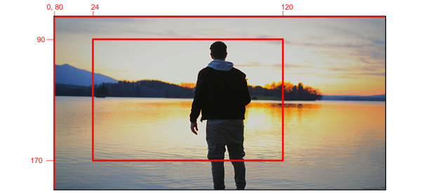
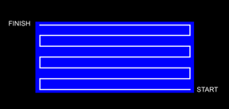
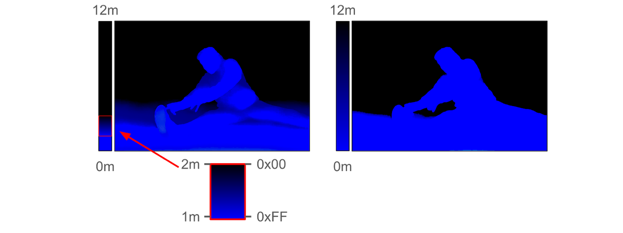
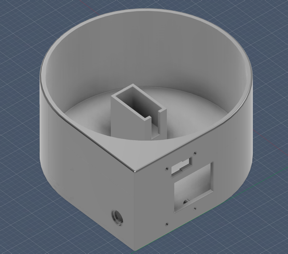
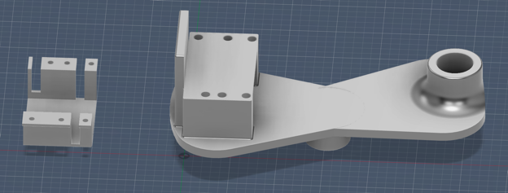
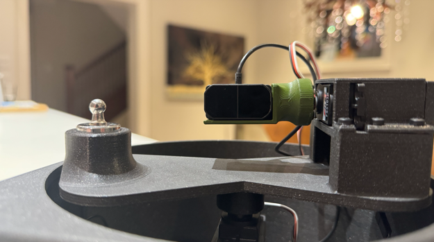
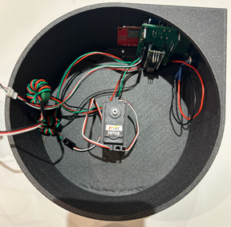
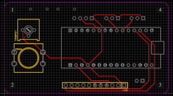
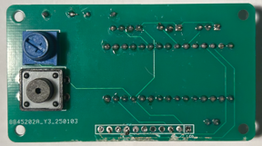
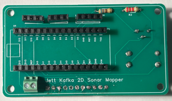

2025 · Embedded Systems · PCB Design · CAD & 3D Printing
2D Servo LiDAR Mapper
Designed and built a desktop LiDAR mapping system capable of scanning a real-world environment and displaying a 2D depth map on an LCD display. The system uses two servo motors to position a LiDAR sensor across horizontal and vertical axes, collecting thousands of distance measurements which are converted into a colour-coded map in real time. The project integrated mechanical design, embedded programming, PCB design, serial communication, and 3D CAD into a single finished product.

Video Demonstration
Working system first
The demonstration shows the completed scanner operating as a real hardware project, with the LiDAR, servos, electronics, and enclosure working together.
 ▶ Watch on YouTube
▶ Watch on YouTube
Engineering Challenge
Turn a single distance sensor into a scanning mapper.
A fixed LiDAR sensor only measures distance in one direction. The main challenge was to create a controlled scanning system that could move the sensor through a defined field of view, collect distance readings at each position, and display those readings in a useful visual format.
This required more than simply wiring a sensor to a microcontroller. The project needed embedded code for sensor acquisition and servo control, user-interface logic for selecting the scan region, a PCB to organize the hardware connections, and a 3D-printed structure to hold the sensor and servo mechanism in a repeatable position.
Core idea: combine sensing, movement, display, and mechanical packaging into one finished device.
The project is strongest as an integration project: the electrical, software, and mechanical parts all had to work together for the mapper to function.
Scan Setup & User Interface
Selecting the mapping area
Before the scan begins, the system needs to know what region it should measure. The interface allowed the scan frame and distance-colour scale to be set before the mapper began collecting readings.
The images below are graphics/interface screenshots, so short captions are enough. Their purpose is to show how the system defined the scan region and translated measured distances into a visual output.



How It Works
Coordinating movement and measurement
The LiDAR sensor provides distance readings, while the servo system changes the direction of the sensor. By taking a measurement, moving the sensor, and repeating the process across a chosen frame, the system builds up a two-dimensional representation of distance across the selected field of view.
The key engineering issue is synchronization. If the software reads the sensor before the servo reaches the correct position, the data becomes less meaningful. If the scan is too slow, the system feels inefficient. The project therefore depended on timing control, repeatable servo positioning, and clean communication between the sensor and controller.
Subsystems involved:
- TF Mini Plus LiDAR for distance measurement
- Servo motors for positioning
- Arduino-based control logic
- LCD/user interface for setup and output
- PCB and wiring harness for hardware integration
Mechanical Design & 3D Printing
Designing the physical scanner
The enclosure and mounting system were not just cosmetic. They were part of the function of the device because the LiDAR sensor needed to stay aligned with the servo-driven mechanism.
For mechanical and enclosure images, the page can be more visual. These images show the packaging and mounting solution clearly, so the captions focus on what each part contributes to the final assembly.



PCB & Internal Integration
Moving from loose wiring toward a finished device
After proving the system concept, the project was packaged into a more complete hardware build. The PCB helped organize connections between the Arduino, buttons, potentiometer, display, sensor, and servo hardware.
The PCB stage moved the project beyond a temporary breadboard-style prototype. Reducing loose wiring made the system cleaner, easier to assemble, and more reliable as a finished engineering device.




Key Takeaways
- Integrated LiDAR sensing, servo movement, LCD interface logic, PCB wiring, and mechanical packaging.
- Progressed from system concept and interface design to PCB and final enclosure.
- Used CAD and 3D printing to solve alignment and packaging constraints.
- Gained experience thinking about the full hardware product, not just the circuit.